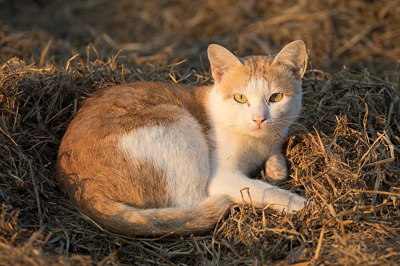

about cats
The domestic cat is a small, typically furry, carnivorous mammal. They are often called house cats when kept as indoor pets or simply cats when there is no need to distinguish them from other felids and felines. They are often valued by humans for companionship and for their ability to hunt vermin. There are more than seventy cat breeds recognized by various cat registries.
Cats are common pets throughout the world, and their worldwide population exceeds 500 million as of 2007. Although cat guardianship has commonly been associated with women, a 2007 Gallup poll reported that men and women in the United States of America were equally likely to own a cat.